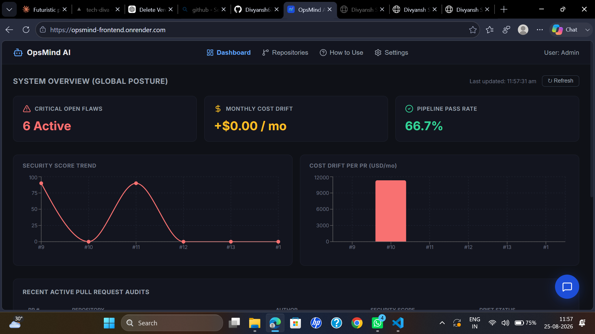

OpsMind AI — DevOps AI Gatekeeper
- Autonomous PR-review system running 3 concurrent AI agents (Security, Cost, Architecture) via GitHub webhooks & CI
- Security Sentinel scans diffs for hardcoded secrets & CWE-tagged vulnerabilities with remediation snippets
- Cost Predictor estimates real USD/month cloud cost impact from Terraform/CloudFormation changes
- Architecture Supervisor checks code against custom rules via pgvector semantic similarity search
- RAG chatbot with SSE streaming, answers questions about findings using hybrid pgvector + full-text search
- Fully containerized, CI-tested, deployed free on Render + Neon — $0/month
More information
Engineering teams merge code every day without knowing the full blast radius of what they're shipping — a leaked API key, a silent $15k/month AWS bill increase, or a repository-pattern violation that becomes a technical debt time bomb. OpsMind AI acts as an always-on automated senior reviewer that intercepts every pull request before it merges.
What makes it different:
- Three concurrent AI agents (not one) — security, cost, and architecture reasoned about independently via goroutines, full context each
- Self-improving via an MLOps feedback loop — engineer overrides are logged and inform future runs; architecture rules are defined in plain English, embedded via Gemini, matched via pgvector semantic search
- Interactive RAG chatbot — ask "what security issues exist in admin.go?" and get streamed, source-cited answers
- Runs entirely on free tiers — Go backend, PostgreSQL + pgvector on Neon, React dashboard on Render — $0/month, no expiring resources
Stack: Go (concurrent backend) · PostgreSQL + pgvector on Neon · Groq (GPT-OSS 120B) for agents/RAG · Gemini embedding-001 for vectors · React + TypeScript (Vite) · Docker · GitHub Actions CI · Render hosting
Status: Live in production, verified end-to-end on a real GitHub repository, with a 10-test Go test suite and a full CI pipeline on every push. The backend is on Render's free tier, so it may take 30–60s to wake up after inactivity.
